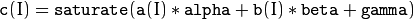

Operations on Matrics¶
ocl::abs¶
Returns void
-
C++:
ocl::abs(const oclMat& src, oclMat& dst)¶ Parameters: - src – input array.
- dst – destination array, it will have the same size and same type as
src.
Computes per-element absolute values of the input array. Supports all data types.
ocl::absdiff¶
Returns void
-
C++:
ocl::absdiff(const oclMat& src1, const oclMat& src2, oclMat& dst)¶
-
C++:
ocl::absdiff(const oclMat& src1, const Scalar& s, oclMat& dst)¶ Parameters: - src1 – the first input array.
- src2 – the second input array, must be the same size and same type as
src1. - s – scalar, the second input parameter.
- dst – the destination array, it will have the same size and same type as
src1.
Computes per-element absolute difference between two arrays or between array and a scalar. Supports all data types.
ocl::add¶
Returns void
-
C++:
ocl::add(const oclMat& src1, const oclMat& src2, oclMat& dst, const oclMat& mask=oclMat())¶
-
C++:
ocl::add(const oclMat& src1, const Scalar& s, oclMat& dst, const oclMat& mask=oclMat())¶ Parameters: - src1 – the first input array.
- src2 – the second input array, must be the same size and same type as
src1. - s – scalar, the second input parameter
- dst – the destination array, it will have the same size and same type as
src1. - mask – the optional operation mask, 8-bit single channel array; specifies elements of the destination array to be changed.
Computes per-element additon between two arrays or between array and a scalar. Supports all data types.
ocl::addWeighted¶
Computes the weighted sum of two arrays.
-
C++:
ocl::addWeighted(const oclMat& src1, double alpha, const oclMat& src2, double beta, double gama, oclMat& dst)¶ Parameters: - src1 – First source array.
- alpha – Weight for the first array elements.
- src2 – Second source array of the same size and channel number as
src1. - beta – Weight for the second array elements.
- dst – Destination array that has the same size and number of channels as the input arrays.
- gamma – Scalar added to each sum.
The function addWeighted calculates the weighted sum of two arrays as follows:

where I is a multi-dimensional index of array elements. In case of multi-channel arrays, each channel is processed independently.
See also
ocl::bitwise_and¶
Returns void
-
C++:
ocl::bitwise_and(const oclMat& src1, const oclMat& src2, oclMat& dst, const oclMat& mask=oclMat())¶
-
C++:
ocl::bitwise_and(const oclMat& src1, const Scalar& s, oclMat& dst, const oclMat& mask=oclMat())¶ Parameters: - src1 – the first input array.
- src2 – the second input array, must be the same size and same type as
src1. - s – scalar, the second input parameter.
- dst – the destination array, it will have the same size and same type as
src1. - mask – the optional operation mask, 8-bit single channel array; specifies elements of the destination array to be changed.
Computes per-element bitwise_and between two arrays or between array and a scalar. Supports all data types.
ocl::bitwise_not¶
Returns void
-
C++:
ocl::bitwise_not(const oclMat& src, oclMat& dst)¶ Parameters: - src – the input array.
- dst – the destination array, it will have the same size and same type as
src.
The functions bitwise not compute per-element bit-wise inversion of the source array. Supports all data types.
ocl::bitwise_or¶
Returns void
-
C++:
ocl::bitwise_or(const oclMat& src1, const oclMat& src2, oclMat& dst, const oclMat& mask=oclMat())¶
-
C++:
ocl::bitwise_or(const oclMat& src1, const Scalar& s, oclMat& dst, const oclMat& mask=oclMat())¶ Parameters: - src1 – the first input array.
- src2 – the second input array, must be the same size and same type as
src1. - s – scalar, the second input parameter.
- dst – the destination array, it will have the same size and same type as
src1. - mask – the optional operation mask, 8-bit single channel array; specifies elements of the destination array to be changed.
Computes per-element bitwise_or between two arrays or between array and a scalar. Supports all data types.
ocl::bitwise_xor¶
Returns void
-
C++:
ocl::bitwise_xor(const oclMat& src1, const oclMat& src2, oclMat& dst, const oclMat& mask=oclMat())¶
-
C++:
ocl::bitwise_xor(const oclMat& src1, const Scalar& s, oclMat& dst, const oclMat& mask=oclMat())¶ Parameters: - src1 – the first input array.
- src2 – the second input array, must be the same size and same type as
src1. - sc – scalar, the second input parameter.
- dst – the destination array, it will have the same size and same type as
src1. - mask – the optional operation mask, 8-bit single channel array; specifies elements of the destination array to be changed.
Computes per-element bitwise_xor between two arrays or between array and a scalar. Supports all data types.
ocl::cartToPolar¶
Returns void
-
C++:
ocl::cartToPolar(const oclMat& x, const oclMat& y, oclMat& magnitude, oclMat& angle, bool angleInDegrees=false)¶ Parameters: - x – the array of x-coordinates; must be single-precision or double-precision floating-point array.
- y – the array of y-coordinates; it must have the same size and same type as
x. - magnitude – the destination array of magnitudes of the same size and same type as
x. - angle – the destination array of angles of the same size and same type as
x. The angles are measured in radians (0 to 2pi) or in degrees (0 to 360 degrees). - angleInDegrees – the flag indicating whether the angles are measured in radians, which is default mode, or in degrees.
Calculates the magnitude and angle of 2D vectors. Supports only CV_32F and CV_64F data types.
ocl::compare¶
Returns void
-
C++:
ocl::compare(const oclMat& src1, const oclMat& src2, oclMat& dst, int cmpop)¶ Parameters: - src1 – the first source array.
- src2 – the second source array; must have the same size and same type as
src1. - dst – the destination array; will have the same size as
src1and typeCV_8UC1. - cmpop – the flag specifying the relation between the elements to be checked.
Performs per-element comparison of two arrays or an array and scalar value. Supports all data types.
ocl::dft¶
Performs a forward or inverse discrete Fourier transform (1D or 2D) of the floating point matrix.
-
C++:
ocl::dft(const oclMat& src, oclMat& dst, Size dft_size=Size(), int flags=0)¶ Parameters: - src – source matrix (real or complex).
- dst – destination matrix (real or complex).
- dft_size – size of original input, which is used for transformation from complex to real.
- flags –
optional flags:
- DFT_ROWS transforms each individual row of the source matrix.
- DFT_COMPLEX_OUTPUT performs a forward transformation of 1D or 2D real array. The result, though being a complex array, has complex-conjugate symmetry (CCS, see the function description below for details). Such an array can be packed into a real array of the same size as input, which is the fastest option and which is what the function does by default. However, you may wish to get a full complex array (for simpler spectrum analysis, and so on). Pass the flag to enable the function to produce a full-size complex output array.
- DFT_INVERSE inverts DFT. Use for complex-complex cases (real-complex and complex-real cases are always forward and inverse, respectively).
- DFT_REAL_OUTPUT specifies the output as real. The source matrix is the result of real-complex transform, so the destination matrix must be real.
Use to handle real matrices (CV_32FC1) and complex matrices in the interleaved format (CV_32FC2).
The dft_size must be powers of 2, 3 and 5. Real to complex dft output is not the same with cpu version. Real to complex and complex to real does not support DFT_ROWS.
See also
ocl::divide¶
Returns void
-
C++:
ocl::divide(const oclMat& src1, const oclMat& src2, oclMat& dst, double scale=1)¶
-
C++:
ocl::divide(double scale, const oclMat& src1, oclMat& dst)¶ Parameters: - src1 – the first input array.
- src2 – the second input array, must be the same size and same type as
src1. - dst – the destination array, it will have the same size and same type as
src1. - scale – scalar factor.
Computes per-element divide between two arrays or between array and a scalar. Supports all data types.
ocl::exp¶
Returns void
-
C++:
ocl::exp(const oclMat& src, oclMat& dst)¶ Parameters: - src – the first source array.
- dst – the dst array; must have the same size and same type as
src.
The function exp calculates the exponent of every element of the input array. Supports only CV_32FC1 and CV_64F data types.
ocl::flip¶
Returns void
-
C++:
ocl::flip(const oclMat& src, oclMat& dst, int flipCode)¶ Parameters: - src – source image.
- dst – destination image.
- flipCode – specifies how to flip the array: 0 means flipping around the x-axis, positive (e.g., 1) means flipping around y-axis, and negative (e.g., -1) means flipping around both axes.
The function flip flips the array in one of three different ways (row and column indices are 0-based). Supports all data types.
ocl::gemm¶
Performs generalized matrix multiplication.
-
C++:
ocl::gemm(const oclMat& src1, const oclMat& src2, double alpha, const oclMat& src3, double beta, oclMat& dst, int flags=0)¶ Parameters: - src1 – first multiplied input matrix that should be
CV_32FC1type. - src2 – second multiplied input matrix of the same type as
src1. - alpha – weight of the matrix product.
- src3 – third optional delta matrix added to the matrix product. It should have the same type as
src1andsrc2. - beta – weight of
src3. - dst – destination matrix. It has the proper size and the same type as input matrices.
- flags –
operation flags:
- GEMM_1_T transpose
src1. - GEMM_2_T transpose
src2.
- GEMM_1_T transpose
- src1 – first multiplied input matrix that should be
See also
ocl::log¶
Returns void
-
C++:
ocl::log(const oclMat& src, oclMat& dst)¶ Parameters: - src – the first source array.
- dst – the dst array; must have the same size and same type as
src.
The function log calculates the log of every element of the input array. Supports only CV_32FC1 and CV_64F data types.
ocl::LUT¶
Returns void
-
C++:
ocl::LUT(const oclMat& src, const oclMat& lut, oclMat& dst)¶ Parameters: - src – source array of 8-bit elements.
- lut – look-up table of 256 elements. In the case of multi-channel source array, the table should either have a single channel (in this case the same table is used for all channels) or the same number of channels as in the source array.
- dst – destination array; will have the same size and the same number of channels as
src, and the same depth aslut.
Performs a look-up table transform of an array.
ocl::magnitude¶
Returns void
-
C++:
ocl::magnitude(const oclMat& x, const oclMat& y, oclMat& magnitude)¶ Parameters: - x – the floating-point array of x-coordinates of the vectors.
- y – the floating-point array of y-coordinates of the vectors; must have the same size as
x. - magnitude – the destination array; will have the same size and same type as
x.
The function magnitude calculates magnitude of 2D vectors formed from the corresponding elements of x and y arrays. Supports only CV_32F and CV_64F data types.
ocl::meanStdDev¶
Returns void
-
C++:
ocl::meanStdDev(const oclMat& mtx, Scalar& mean, Scalar& stddev)¶ Parameters: - mtx – source image.
- mean – the output parameter: computed mean value.
- stddev – the output parameter: computed standard deviation.
The functions meanStdDev compute the mean and the standard deviation M of array elements, independently for each channel, and return it via the output parameters. Supports all data types.
ocl::merge¶
Returns void
-
C++:
ocl::merge(const vector<oclMat>& src, oclMat& dst)¶ Parameters: - src – The source array or vector of the single-channel matrices to be merged. All the matrices in src must have the same size and the same type.
- dst – The destination array; will have the same size and the same depth as src, the number of channels will match the number of source matrices.
Composes a multi-channel array from several single-channel arrays. Supports all data types.
ocl::multiply¶
Returns void
-
C++:
ocl::multiply(const oclMat& src1, const oclMat& src2, oclMat& dst, double scale=1)¶ Parameters: - src1 – the first input array.
- src2 – the second input array, must be the same size and same type as
src1. - dst – the destination array, it will have the same size and same type as
src1. - scale – optional scale factor.
Computes per-element multiply between two arrays or between array and a scalar. Supports all data types.
ocl::norm¶
Returns the calculated norm
-
C++:
ocl::norm(const oclMat& src1, int normType=NORM_L2)¶
-
C++:
ocl::norm(const oclMat& src1, const oclMat& src2, int normType=NORM_L2)¶ Parameters: - src1 – the first source array.
- src2 – the second source array of the same size and the same type as
src1. - normType – type of the norm.
The functions norm calculate an absolute norm of src1 (when there is no src2 ):

or an absolute or relative difference norm if src2 is there:

or

The functions norm return the calculated norm.
A multi-channel input arrays are treated as a single-channel, that is, the results for all channels are combined.
ocl::oclMat::convertTo¶
Returns void
-
C++:
ocl::oclMat::convertTo(oclMat& m, int rtype, double alpha=1, double beta=0)const¶ Parameters: - m – the destination matrix. If it does not have a proper size or type before the operation, it will be reallocated.
- rtype – the desired destination matrix type, or rather, the depth (since the number of channels will be the same with the source one). If rtype is negative, the destination matrix will have the same type as the source.
- alpha – optional scale factor.
- beta – optional delta added to the scaled values.
The method converts source pixel values to the target datatype. Saturate cast is applied in the end to avoid possible overflows. Supports all data types.
ocl::oclMat::copyTo¶
Returns void
-
C++:
ocl::oclMat::copyTo(oclMat& m, const oclMat& mask=oclMat())const¶ Parameters: - m – The destination matrix. If it does not have a proper size or type before the operation, it will be reallocated.
- mask – The operation mask. Its non-zero elements indicate, which matrix elements need to be copied.
Copies the matrix to another one. Supports all data types.
ocl::oclMat::setTo¶
Returns oclMat
-
C++:
ocl::oclMat::setTo(const Scalar& s, const oclMat& mask=oclMat())¶ Parameters: - s – Assigned scalar, which is converted to the actual array type.
- mask – The operation mask of the same size as
*thisand typeCV_8UC1.
Sets all or some of the array elements to the specified value. This is the advanced variant of Mat::operator=(const Scalar s) operator. Supports all data types.
ocl::phase¶
Returns void
-
C++:
ocl::phase(const oclMat& x, const oclMat& y, oclMat& angle, bool angleInDegrees=false)¶ Parameters: - x – the source floating-point array of x-coordinates of 2D vectors
- y – the source array of y-coordinates of 2D vectors; must have the same size and the same type as
x. - angle – the destination array of vector angles; it will have the same size and same type as
x. - angleInDegrees – when it is true, the function will compute angle in degrees, otherwise they will be measured in radians.
The function phase computes the rotation angle of each 2D vector that is formed from the corresponding elements of x and y. Supports only CV_32FC1 and CV_64FC1 data type.
ocl::polarToCart¶
Returns void
-
C++:
ocl::polarToCart(const oclMat& magnitude, const oclMat& angle, oclMat& x, oclMat& y, bool angleInDegrees=false)¶ Parameters: - magnitude – the source floating-point array of magnitudes of 2D vectors. It can be an empty matrix (=Mat()) - in this case the function assumes that all the magnitudes are = 1. If it’s not empty, it must have the same size and same type as
angle. - angle – the source floating-point array of angles of the 2D vectors.
- x – the destination array of x-coordinates of 2D vectors; will have the same size and the same type as
angle. - y – the destination array of y-coordinates of 2D vectors; will have the same size and the same type as
angle. - angleInDegrees – the flag indicating whether the angles are measured in radians, which is default mode, or in degrees.
- magnitude – the source floating-point array of magnitudes of 2D vectors. It can be an empty matrix (=Mat()) - in this case the function assumes that all the magnitudes are = 1. If it’s not empty, it must have the same size and same type as
The function polarToCart computes the cartesian coordinates of each 2D vector represented by the corresponding elements of magnitude and angle. Supports only CV_32F and CV_64F data types.
ocl::pow¶
Returns void
-
C++:
ocl::pow(const oclMat& x, double p, oclMat& y)¶ Parameters: - x – the source array.
- p – the exponent of power; the source floating-point array of angles of the 2D vectors.
- y – the destination array, should be the same type as the source.
The function pow raises every element of the input array to p. Supports only CV_32FC1 and CV_64FC1 data types.
ocl::setIdentity¶
Returns void
-
C++:
ocl::setIdentity(oclMat& src, const Scalar& val=Scalar(1))¶ Parameters: - src – matrix to initialize (not necessarily square).
- val – value to assign to diagonal elements.
The function initializes a scaled identity matrix.
ocl::sortByKey¶
Returns void
-
C++:
ocl::sortByKey(oclMat& keys, oclMat& values, int method, bool isGreaterThan=false)¶ Parameters: - keys – the keys to be used as sorting indices.
- values – the array of values.
- isGreaterThan – determine sorting order.
- method –
supported sorting methods:
- SORT_BITONIC bitonic sort, only support power-of-2 buffer size.
- SORT_SELECTION selection sort, currently cannot sort duplicate keys.
- SORT_MERGE merge sort.
- SORT_RADIX radix sort, only support signed int/float keys(
CV_32S/CV_32F).
Returns the sorted result of all the elements in values based on equivalent keys.
The element unit in the values to be sorted is determined from the data type, i.e., a CV_32FC2 input {a1a2, b1b2} will be considered as two elements, regardless its matrix dimension.
Both keys and values will be sorted inplace.
Keys needs to be a single channel oclMat.
Example:
input -
keys = {2, 3, 1} (CV_8UC1)
values = {10,5, 4,3, 6,2} (CV_8UC2)
sortByKey(keys, values, SORT_SELECTION, false);
output -
keys = {1, 2, 3} (CV_8UC1)
values = {6,2, 10,5, 4,3} (CV_8UC2)
ocl::split¶
Returns void
-
C++:
ocl::split(const oclMat& src, vector<oclMat>& dst)¶ Parameters: - src – The source multi-channel array
- dst – The destination array or vector of arrays; The number of arrays must match src.channels(). The arrays themselves will be reallocated if needed.
The functions split split multi-channel array into separate single-channel arrays. Supports all data types.
ocl::subtract¶
Returns void
-
C++:
ocl::subtract(const oclMat& src1, const oclMat& src2, oclMat& dst, const oclMat& mask=oclMat())¶
-
C++:
ocl::subtract(const oclMat& src1, const Scalar& s, oclMat& dst, const oclMat& mask=oclMat())¶ Parameters: - src1 – the first input array.
- src2 – the second input array, must be the same size and same type as
src1. - s – scalar, the second input parameter.
- dst – the destination array, it will have the same size and same type as
src1. - mask – the optional operation mask, 8-bit single channel array; specifies elements of the destination array to be changed.
Computes per-element subtract between two arrays or between array and a scalar. Supports all data types.
Help and Feedback
You did not find what you were looking for?- Ask a question on the Q&A forum.
- If you think something is missing or wrong in the documentation, please file a bug report.

Table Of Contents
- Operations on Matrics
- ocl::abs
- ocl::absdiff
- ocl::add
- ocl::addWeighted
- ocl::bitwise_and
- ocl::bitwise_not
- ocl::bitwise_or
- ocl::bitwise_xor
- ocl::cartToPolar
- ocl::compare
- ocl::dft
- ocl::divide
- ocl::exp
- ocl::flip
- ocl::gemm
- ocl::log
- ocl::LUT
- ocl::magnitude
- ocl::meanStdDev
- ocl::merge
- ocl::multiply
- ocl::norm
- ocl::oclMat::convertTo
- ocl::oclMat::copyTo
- ocl::oclMat::setTo
- ocl::phase
- ocl::polarToCart
- ocl::pow
- ocl::setIdentity
- ocl::sortByKey
- ocl::split
- ocl::subtract
- ocl::transpose